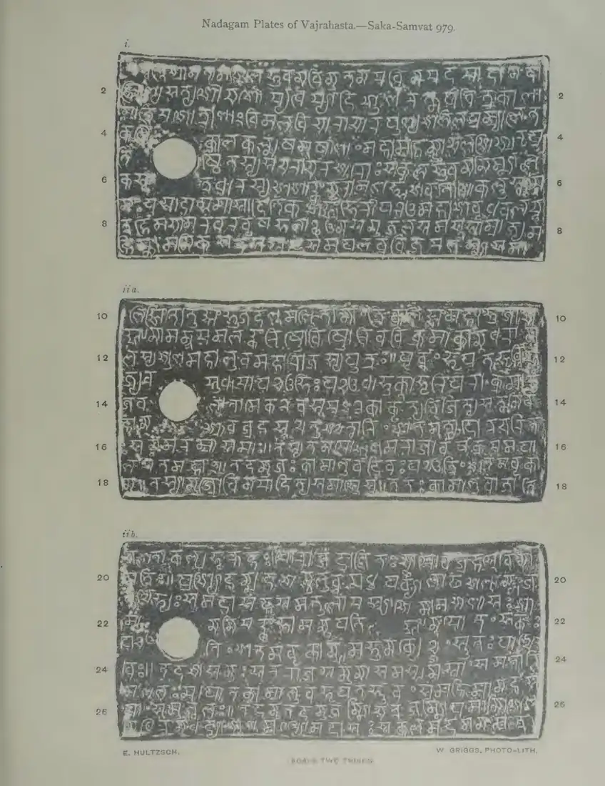
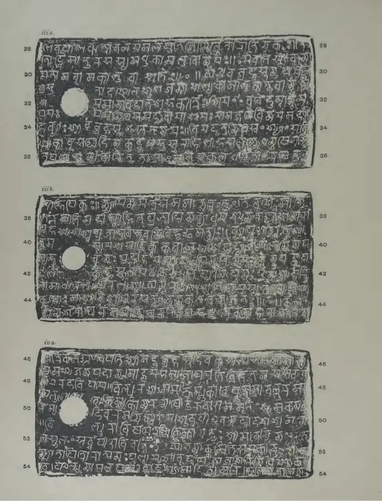

Nadagām plates of Vajrahasta ; Śaka-Saṅvat 979
NADAGAM PLATES OF VAJRAHASTA;
SAKA-SAMVAT 979.
SAKA-SAMVAT 979.
By G. V. RAMAMURTI; PARLAKIMEDI.
These plates were discovered about two years ago at Nađagâm, a village in the Narasannapêta tâluka of the Gañjâm district, by one Sanku Appanna, a cultivator, while he was working in the field. It is believed by the villagers that the plates belonged to some Jangams, a sect of Šaivas, who had been living in this locality until fifty years ago. Last year I received information of the discovery of these plates, and got them into my hands a few months ago. I sent them through Mr. Weir, the Collector of Gañjâm, to Dr. Hultzsch, who has permitted me to edit them in this Journal. The owner is reported to be willing to have the plates preserved in the Government Central Museum, Madras.
The set consists of five copper-plates, of which the first has been engraved only on the inner side; the next three plates bear writing on both faces; the last plate is left blank on both sides and serves only for the protection of the writing on the back of the fourth plate. Each plate measures about by 4" and has a hole to the proper right, through which a ring passes. This ring is about thick and about in diameter. It had not yet been cut when the plates were sent to Dr. Hultzsch. Its two ends are soldered into the lower portion of a thick circular seal, on which is fixed an image of a bull couchant, long and 1" high, with the figures of a conch-shell and a chaurî to its proper right, the figures of a sword and an
1 According to the Tamil dictionaries, kdvidi usually means 'a minister' or 'an accountant.'
elephant-goad to the left, a crescent in front, and what looks like a drum at the back.1 Almost all these figures are seen on the seals of other plates issued by the Gânga kings, who were worshippers of Śiva. The weight of the plates is 3 ½ lb 4½.oz. and that of the ring and seal 1 ½ 5½ oz; total, 4 ½ 10 oz. The edges of each plate are raised into rims for the protection of the writing, which is in a state of nearly perfect preservation. The engraver did his work very carelessly, as may be seen from the numerous mistakes which are noticed in the footnotes. The last sentence of the inscription (in l. 57) is indistinct owing to the fact that three lines of writing had been originally engraved on and below line 57, and had been partially effaced before the sentence with which the inscription now ends was engraved. The three erased lines, as far as they can now be made out, run as follows :—
57 . . . . मी । मज्जामावे द-
58 एनायकस[१*]मयाय दत्तम् । मयपांगुसामयेनेशपं . . स-
59 नसन्तनवत्तनमेव ॥
The alphabet employed belongs to the old Nâgarî type without any admixture of other kinds of characters. I infer that this type was in use in Kalinga during the time which this inscription may be referred to, from some stone inscriptions I have discovered in the village of Mukhalingam,2 some on the walls of the temple there, and some on a stone lately dug out under my instructions. The characters of these inscriptions are almost the same as those used in the present plates, but they are more regularly shaped and perhaps exhibit older forms of some letters. The Eastern Chalukya type of the eleventh century is however more extensively in evidence here, as everywhere else in the Telugu country. The points that call for notice, are :— (1) Final m is denoted in six places (ll. 3, 14, 17, 30, 36, 48) by an anusvâra with a stroke under it, while in lines 48, 49 it is denoted in the usual manner. The truncated न in the last line (57) is probably due to the carelessness of the engraver. The anusvâra is also used frequently, in some places on the top of a letter to its proper left, and in others by its side. (2) It is not easy in several places, except with the help of the context, to distinguish the i symbol on a consonant from the é symbol, and also the â from the î symbol. (3) n is distinguished from l by the absence of the top line on the former; but rn, being denoted by the addition of a horizontal stroke above the letter, is liable to be confounded with l; see rnha in line 12 and la just above it in line 11. (4) The forms of nga in line 10; of ngha in line 9, ghâ in line 38, and nghé in line 35; of ûkha in line 7 and khyâm in line 34; of mbha in line 42 are to be noted. (5) ñcha, which occurs five times (ll. 7, 13, 17 and 23), and ñchha (l. 8) are denoted by the nasal mark ñ placed after the signs for cha and chha. I cannot say whether this is due to the peculiarity of the pronunciation of the time.3
The language of the inscription is Sanskrit throughout, nearly half of it being verse and the other part prose. The composition is not free from blemishes; in the last eight lines the construction is faulty. As regards orthography, what prominently strikes one, is the employment of the v sign for b throughout, as also the doubling of a consonant after r (the exception to it being rthî in ll. 21 and 23), and the use of the nasals ñ and ñ (the only exceptions being found in ll. 34, 49 and 56, where kh, g and j are preceded by an anusvâra). Ś (palatal) is used for s (dental) in salila (l. 3) and âsîné (l. 44); s (dental) is used for ś (palatal) in Santanu (l. 24) and mâhésvara (l. 45); and ś for sh in paṭṭakésv=âlimpanti (l. 42).
1 Unlike the seal of the Parlâkimeđi plates of Vajrahasta's time (above, Vol. III. p. 220), this seal bears no legend.
2 About 20 miles from Parlâkimeđi in the Gânjâm district; see the last three paragraphs of this introduction.
3 Sanskrit Pandits of this part of the country may be heard to pronounce jña as gña. Compare above, Vol. III. p. 237.
The letter v is doubled before y in navvyádhayaś=cha (l. 38), while j is used for jj before v in samujvala (ll. 8 and 26).
This inscription records a grant of land to one Pāngu-Sámaya (i.e. Sômaya ?) (l. 56) by Vajrahasta, a prince of the Gânga family, who is styled Paramamáhésvara, Paramabhaṭtāraka, Mahârájádhirája and Trikaliṅgádhipati (ll. 45-46). The charter was issued from Kalinganagara1 (l. 44) and addressed to an assembly of his subjects (janapada), headed by his ministers (ll. 46-47). The grant was made in the Śāka year 979, on Sunday, the twelfth tithi of the bright fortnight of the month of Phâlguna, corresponding to the 4th March A.D. 10582 (ll. 53-54). The corresponding cyclic year, Hêvilambin, is not mentioned—a point deserving of notice. The date of the grant is of some interest. It is known by the name of Gôvinda-dvādaśi,3 an occasion occurring at intervals of not less than sixty years, when it is a custom among the Hindús to make gifts of land and money. The object of the grant (ll. 48 to 51 and 56) seems to be an extensive tract of land, containing twelve villages, which were separated from the district (vishaya) of Éráda4 and constituted into a separate district, which was named the Vêlpûrâ-vishaya after its chief village, Vêlpûra. Nothing is recorded of the donee except the names of his parents, Śrikanṭha-Nâyaka and Vêdavî, his grandfather Ayitana, and the latter's native place, Chhili (or Dhili?). But the three half-erased lines referred to above disclose a fact which establishes a close relationship between the donee and the king. Sámaya is there spoken of as “my son-in-law, the Dandanâyaka S[â]maya.” The sentence which was subsequently engraved in the place of the obliterated passage (l. 57), records the grant of an additional village in the district of Kôluvartanî.5
The inscription also records another date, even more important than the one given above, namely the date of Vajrahasta's installation ceremony (verse 8): the Śāka year 960 (expired), while the sun was in Vrishabha, (the moon) in the Rôhinî-nakshatra, in the Dhanur-lagna, on Sunday, the third tithi of the bright fortnight, corresponding to the 3rd May A.D. 1038, 8 h. 27 m. P.M. The corresponding cyclic year, Bahudhânya, is not given even here. The lunar month is not mentioned, though the lunar tithi is given. This date, like that of the installation of Anantavarma-Chôdaganga,6 is important as it gives us a certain, reliable land-mark in the chronology of the Gângas; and it is besides the earliest known date of this dynasty. The Parlâkimeđi plates of Vajrahasta's time published by Professor Kielhorn (above, Vol. III. p. 220) are not dated, but are referred, on palæographical grounds, to the period of this very king Vajrahasta.
Like other grants of the kings of this dynasty, the present inscription opens with a panegyrical passage describing the virtues and valour of the Gânga kings, their royal insignia, and their devotion to the god Śiva, established, under the name of Gôkarnasvâmin, on the top of Mount Mahêndra.7 Then follows a genealogy tracing the descent of Vajrahasta, who issued the charter, from one Guṇamahârnava (l. 12), whose son Vajrahasta I. is here spoken of as having consolidated the Kalinga kingdom by uniting the five parts into which it had been
1 See the last paragraphs of this introduction for my identification of Kalinganagara.
2 Kannépalli Chalamayya Śâstri Gâru, a learned astronomer of Lukulâm in the Gañjâm district, kindly calculated for me the English equivalents of the Śaka dates mentioned in this inscription.
3 The same learned astronomer pointed out to me the importance of this day. The following élôka was quoted by him: फाल्गुने शुक्लदादश्यां कुम्भस्थे च दिवाकरे । नक्षस्थिते मूर्यमुते जीवे कामुंकसंस्थिते ॥ पुष्यर्चै बवसंयुक्तै शीमने भानुवासरे । गीविन्ददादशौ प्रीक्ता देवानामपि दुर्लभा ॥
4 [The Éráda-vishaya is mentioned in an inscription at Śríkûrmam (No. 324 of 1896).—E. H.]
5 [Mr. H. Krishna Sastri suggests that, as kôla is a synonym of varâha, Kôluvartanî may be the same as Varâhavartanî, on which see above, Vol. III. p. 127, note 5, and which occurs also in three inscriptions at Mukhalingam (Nos. 185, 196 and 220 of 1896).—E. H.]
6 Ind. Ant. Vol. XVIII. p. 161 f.
7 Lines 1 to 12 as also ll. 44 to 47 of this inscription are worded similarly to ll. 1 to 13 and 33 to 36 of Anantavarman's grant of Śaka-Samvat 1003; Ind. Ant. Vol. XVIII. p. 162 ff.
formerly divided under the rule of five independent kings (verse 1).1 Not a single historical fact is recorded in connection with the reign of any other of the kings mentioned here. The subject matter (some of which is here put in verse) is almost the same as that contained in the inscription of Anantavarman, above referred to. One of the kings, Vajrahasta II., whose liberality in giving away a thousand elephants to mendicants is everywhere described in the same manner, is here for the first time mentioned with a second name, Aniyañkabhīma (1. 22). Verses 10 and 11 of this inscription, extolling Vajrahasta III., the last king of that name, are, word for word, the same as those in lines 77-81 of one of Anantavarman's grants, dated Śaka-Samvat 1040.2 It is evident from the dates of these grants that the writer of the latter copied these verses from an earlier inscription. The information contained in the Nadagâm plates may be conveniently exhibited in the following genealogical table:—
1. Guṇamahârnava.
2. Vajrahasta I.
(44 yrs.)
3. Gundama I.
(3 yrs.)
4. Kâmârnava I.
(35 yrs.)
5. Vinayâditya.
(3 yrs.)
6. Vajrahasta II. alias Aniyañkabhīma.
7. Kâmârnava II:
( yr.)
m. Vinayamahâdêvî
of the Vaidumba family.
10. Vajrahasta III.
Crowned 3rd May A.D. 1038.
(35 yrs.)
8. Gundama II.
(3 yrs.)
By another wife—
9. Madhu-Kâmârnava III.
(19 yrs.)
1 Anantavarman's grant of Śaka-Sañvat 1040 states that the eldest of these five brothers, " Kâmârnava (I.), gave over his own territory (Gaûgavâđi) to his paternal uncle and, with his brothers, set out to conquer the earth, and came to the mountain Mahèndra. Having there worshipped the god Gôkarṇasvâmin, through his favour he obtained the excellent crest of a bull; and then, decorated with all the insignia of universal sovereignty (does this imply the king's conversion to Śaivisun ?), having descended from the sumpit of the mountain Mahèndra, and being accompanied, like Yudhishthira, by his four younger brothers, Kâmârnava (I.) conquered (king) Balâditya, who had grown sick of war, and took possession of the Kalinga countries . . . . Having decorated his younger brother Dânârnava with the necklace (of royalty, as a token that he should succeed him in that kingdom), he gave to Gunârnava (I.) the Ambavâđi-vishaya; to Mârasimha, the Sôdâ-maṇdala; and to Vajrahasta (I.), the Kanṭaka-vartanî;" see Ind. Ant. Vol. XVIII. p. 170 f. After Kâmârnava I., his brother Dânârnava is said to have ruled the kingdom, and he is said to have been succeeded by his son. Is it to be supposed that, according to the present grant, the provinces Ambavâđi, Sôdâ and Kanṭaka-vartanî continued to be governed by the descendants of Kâmârnava's brothers till they were conquered by Vajrahasta, the son of Gunamahârnava ? Ambâvalli and Sôda, two villages in the Parlâkimeđi Zamîndârî, may be identified with the chief towns of two of the provinces named above.
2 Ind. Ant. Vol. XVIII. p. 168.
In the Indian Antiquary (Vol. XVIII. p. 161 ff.) Dr. Fleet has published three grants of Anantavarman, which are dated in the Śaka years 1003, 1040 and 1057, and contain genealogical lists of the Gângas. Those given in the first and the third agree with each other and with the one given in the present grant. Anantavarman's grant of Śaka-Saṅvat 1040 professes to trace the genealogy of the Gângas from the very beginning of things. Setting aside for the present the names of all rulers that preceded Kâmârnava I., who is said to have taken the Kalingas (i.e. the country of Kalinga) from Balâditya, the then ruler,— if we compare the list with that given in the present grant, we see that both correspond with each other from the 7th name in the second list, Guṇârnava (Guṇamahârnava in the first list), but with several discrepancies which render the authenticity of the second list suspicious. As no genealogical table is appended to Dr. Fleet's paper on the grant of Śaka-Saṅvat 1040, I take the liberty to give it here (facing page 186) for the purpose of a close comparison with the first list.
Table I. shows that Guṇamahârnava— Guṇârnava II. of Table II.— had a son named Vajrahasta, who reigned for 44 years; but Table II. omits his name, evidently through an oversight of the officer who drafted the inscription. For, the fifth king in the second list is called “the second Vajrahasta,” and the thirteenth king “the fourth Vajrahasta.” Table II. gives the names of two kings, Jitânkuśa and Kaligalânkuśa (his brother's son), who are said to have preceded Guṇdama I. and to have reigned for 15 and 12 years, respectively, but these names are omitted in Table I. It is also to be noted that the length of the reign of Guṇdama I. and that of (his brother) Kâmârnava IV. are stated in Table II. to be 7 and 25 years, while Table I. has the figures 3 and 35 instead. Finally, the second list makes Vajrahasta V. the son of Madhu-Kâmârnava VI., while the present grant states that Vajrahasta “ was born from Kâmârnava, the eldest son of Vajrahasta.”1 Under these circumstances I am not inclined, to depend on the memory of the scribes of Anantavarman's reign for the accuracy of facts relating to a period removed by centuries.
The identification of most of the places mentioned in this grant is rendered difficult by the carelessness of the engraver, which affects proper names very seriously. There is a village called Bâdâm in the Narasannapêta tâluka, near the village where the inscription was discovered. In the Chicacole tâluka is a village named Boppadâm at a distance of about 15 miles from Bâdâm. I cannot say at present whether Vâdâm and Vappudâm of the grant (l. 48 f.) can be identified with these.
I desire to take advantage of this opportunity to express my views regarding the identification of Kalinganagara, a town mentioned in all the copper-plate inscriptions of the Eastern Gângas as their residence, and presumably as the capital of their kingdom. This place has been for many years identified with the modern Kalingapatam, a seaport in the Gañjâm district. But there is evidence that goes to contradict this identification, which is not based on any recorded facts, but seems to have been suggested only by the similarity between the two names. There are no antiquities, or even traces of them, in Kalingapatam of a nature which could suggest the fact of its ever having been the capital of the Kalinga kingdom. That there may have been some, and that the sea may have swallowed them up, are both gratuitous assumptions. Let us therefore discard an unfounded belief which has so long taken possession of us, place ourselves in a state of ignorance regarding the identification of the town, and then examine the following facts.
In the Parlâkimedi Zamîndârî of the Gañjâm district, at a distance of about 20 miles from Parlâkimedi, its chief town, there is a place of pilgrimage named Mukhalingam2 on the left
1 In Anantavarman's grants of Śaka-Saṅvat 1003 and 1057 it is doubtful which of the two. Kâmârnavas is meant to be the father of Vajrahasta.
2 The antiquities of this place were, for the first time, examined by me about two years ago; see the Madras Journal of Literature and Science for 1889-94, p. 68 ff.
bank of the Vañśadhârâ. Here are three temples dedicated to Śiva under the names Madhukēsvara, Bhimēsvara and Sômēsvara.1 The first has numerous inscriptions on its walls and pillars, only some of which I have examined, the others being covered with a thick coating of lime. The second temple also has a few inscriptions. Besides these, there are ruins of temples and other buildings all over the village and beyond it southwards for about two miles as far as another village, named Nagarakatakam, which belongs to the Narasannapêta tâluka. Here and there large slabs of stone, containing inscriptions and well-sculptured figures, are dug out. It is just near this place that the copper-plates which I brought to the notice of Dr. Hultzsch (above, Vol. III. p. 127), were discovered, as also a set of plates published by Dr. Fleet in the Indian Antiquary. Most of the inscriptions here record grants made in favour of the gods Madhukēsvara and Aniyañkabhimēsvara by private individuals, public officers of the state, and persons belonging to the royal family, in the reign of Anantavarma-Chôdagangadêva. There are inscriptions, or rather parts of them, in characters of an earlier period, which I have not thoroughly examined. The god is referred to in the following manner: Kâling-âvani-nagaré śríman-Madhukēsvarâya Śarvâya and Kâlinga-dêša-nagaré śríman-Madhukēsvarâya dêvâya in Sanskrit verses; Nagaramuna Madhukēsvara-dêvaraku and Nagarâna vîti śrî-Madhukēsvara-dêvaraku in Telugu inscriptions. This shows that the town where the temples stand, was called Nagara or Kâlinga-(dêša-)nagara, i.e. “the Nagara of the Kâlinga (country).”2 There is a Kshêtramâhâtmya, of course containing legendary accounts of temples, which mentions four names by which the town was called at different periods: Gôvinda-kânana, Jayantapura, Madhukēsvara and Mukhalingam. Śiva is said to have made himself manifest in the trunk of a madhûka tree; hence the name Madhukēsvara. A frieze on one of the gateways of the temple is explained by the priests as illustrating the origin of the god.
The copper-plate inscription of Śaka-Sainvat 1040, published by Dr. Fleet (Ind. Ant. Vol. XVIII. p. 170 f.), records two facts which bear on this question: (1) Kâmârnava I., the alleged founder of the Gânga dynasty (see Table II. above) had for his capital (râjadhânî) the town named Jantâvuram (l. 49 f.). This is perhaps a mistake for Jayantapuram, which is mentioned in the Kshêtramâhâtmya. (2) Kâmârnava II., the nephew of Kâmârnava I., had a town named Nagara, “in which he built a lofty temple for an emblem of the god Κa in the linga form, to which he had given the name of Madhukêša, because it was produced from a madhûka tree” (l. 61 f.). As stated above, this temple still exists at Mukhalingam. In the inscription which I am now editing, Vajrahasta II. receives the surname Aniyañkabhima (l. 22). It is most probable that the idol in the second temple, above referred to, took its name Aniyañkabhifnêsvara from this king, who established it, or for whose religiouss merit it was established by others.
It appears that the name Mukhalingam is a corruption of Mohalingam, which is the Oriya (or Prâkrit) form of Madhû[ka]-lingam. The Telugu Brâhmaṇas, to whom the Oriya form was unintelligible, explained it in the Kshêtramâhâtmya as a compound of mukha and linga, i.e. ‘a linga with a face.’3 From an examination of the above facts, I am inclined to believe that the site now covered by the villages Mukhalingam and Nagarakatakam (literally, ‘a royal residence in Nagara’) and by the ruins between them represents the ancient capital of Kalinga.4
1 Sômēsvara’s temple may have been built by Sômaya, the person in whose favour the present grant was made, provided that Sômaya is a mistake for Sômaya.
2 A few weeks ago I found in the Madhukēsvara temple a stone inscription of Anantavarmadêva, which records a grant issued ‘from Kalinganagara.’ The occurrence of this name at Mukhalingam itself confirms my identification.
3 This is suggested to me by Mr. S. Râmayya, B.A., of Parlâkimeđi.
4 I do not here enter into a discussion of the question whether Kalinganagara was founded by Kâmârnava II. or existed before him, because this would involve an examination of the intricate problem of the connection between the Gânga kings mentioned in Tables I. and II. given above, and the Gânga kings mentioned in more than a dozen copper-plate inscriptions, whom Dr. Fleet supposes to belong to an earlier dynasty.
Of the many monumental works with which the devotion of several powerful Gânga kings embellished their capital, these three temples alone remain. Surrounded by the ruins of other buildings, they still serve to attest the former magnificence of Kalinganagara.
TEXT.1
First Plate.
- 1 श्रीं2 स्वस्ति [॥*] श्रीमतामखिलभुवनविनुतनयविनयदयादानदा-
- 2 क्षिणसत्यशौचशौर्यधैर्यादिगुणरत्नपवित्रकाणा-
- 3 मात्रेयगोत्राणाम्3 विमलविचाराचारपुण्यशलिलप्रक्षालित-4
- 4 कलिकालकल्मषमषीणां महामहेन्द्राचलशिखरप्र-
- 5 तिष्ठितस्य सचराचरगुरोः सकलभुवननिर्माणै-
- 6 कसूत्रधारस्य शशाङ्कचूडामणेर्भगवतो5 गोकर्णस्वामि-
- 7 नः प्रसादात्ममासादितैकशङ्कभेरीपञ्चमहाशब्दधवलच्छ-6
- 8 त्रहेमचामरवरवृषभलाञ्छनसमुज्वलसमस्तसाम्राज्यम-7
- 9 हिम्नामनेकस[म*]रसङ्घट्टसमुपलब्धविजयलक्ष्मीसमा-8
Second Plate; First Side.
- 10 9लिङ्गितोतुङ्गभुजदण्डमण्डितानां त्रिकलिङ्गमहीभुजां ग[१*]-
- 11 ङ्गानामन्वयमलङ्करिणोविणोरिव10 विक्रमाक्रान्तधराम-
- 12 [ण्ड*]लस्य गुणमहार्ण्णवमहाराजस्य11 पुत्रः ॥ पूर्वं भूपतभूर्विभु-12
- 13 ज्य वसुधा या पञ्चभिः पञ्चधा भुक्ता भूरिपराक्रमा13 भु-
- 14 जवलातामेक14 एव स्वयम् [१*] एकीकृत्य विजित्य 15सत्कनिव-
- 15 हान्16 श्रीवज्रहस्तथतुश्चत्वारिंशतमत्युदोरचरित-17
- 16 : सर्व्वामरक्षीसमाः18 ॥ [१*] तस्य तनयो गुणमराजा19 वर्पत्रयमपा-
- 17 लयत महीम् ॥ तदनुजः कामार्ण्णवदेवः पञ्चत्रिंशतमव्दका-20
- 18 न् ॥ तस्यानुजो विनयादित्य[:*] समास्तिष्व[:*] ॥ ततः कामार्ण्णवाज्जाते21
Second Plate; Second Side.
19 जगतीकल्पभूरुहः. । योराजद्राजित(ः) क्षायो वज्रहस्तीवनी-
20 पतिः ॥ [२*] 1प्रश्योदन्मदगन्धलुब्धमधुपव्यालीटगण्डान्गज-2
21 न्नर्थिभ्यः3 समदासहसमतुलो यस्यागिनामगणी[*]4 [*] स(ः) श्री-
22 माननियङ्गभीमनृपति[गर्ग*]5ङ्गान्वयीतंसकः6
23 पञ्चतिंशतमव्दकान्गमभुनक्ये[थ्यं]7 स्तुतः पार्थि-
24 वेः8 ॥ [३*] तदगसनुः9 स रराज सन्तनासमस्वमसासमतारि-10
25 मण्लः [*] मापात11 कामार्ण्णवभूपतर्भुवं12 समद्विमानङ्स-
26 मां समुज्वलः13 ॥ [8*] तदनु तदनुजन्मो14 चत्तजन्मोपमानो गेण-15
27 नधिरन[व]या गण्डमख्यो मदा सः [*] सकलमदमनक्षत्री-16
Third Plate; First Side.
28 णि वर्पाणि धात्रीवलयमलघुतेजोनिर्जितारातिचकः17 ॥ [५*] त-
29 तो दैमातुरस्य18 मधुकाम[*]र्ण्णवे नृपः ॥० यवर्ति19 स्मावनी-
30 मतामव्दामकार्ण्णवीशतैम्20 ॥०॥ [६*] अथ वज्रहस्तनुपकर-21
31 ग्रसुतादखिलगुणिजना[य*]गण्यकामार्ण्णवात्कवीन्द्रप्र-
32. 22गयमानावदातश्भकीर्त्तेः23 ॥ शिय24 इव 25वैदुम्वान्वय-
33 पयःपयोनिधिसमद्ववायाश्व26 [*] यः समजनै27 विनयमहा-
34 दव्याः28 श्रीवज्रहस्त इति तनयः ॥ [७*] वियदृतुनिधिसंख्यां याति
35 29शाकाव्दसङ्घे दिनकुड्घभुस्थ30 राहिणीभ सलग्ने [*] धनुषि च सि-
36 तपक्षे सूर्यवारे तृतीयां31 युजि सकलधरित्रीं रक्षितुम्32
8 Read पार्थिवैः. 9 Read तद्यस्तुनैः.
10 Read शंतनीस्वामः समन्ताच्छमितारिमण्डलैः.
13 Read भूपतिर्भुवं समृद्धिं. 13 Read समुज्ज्वलः.
15 Read गुणनिधिरनवद्यो गुण्डमाख्यो मुदा.
17 Read चक्रः. 18 Read रस्वस्य.
20 Read मेतामब्दानेकात्रविंशतिम्. 21 Read नृपवरां.
23 Read शुभ. 24 Read श्रिय.
26 Read समृद्धिं. 27 Read समजनि.
11 Read अपाच.
14 Read °जन्मा चित्त°.
16 Read सकलमिदमरचक्षीणि वर्षाणि.
19 Read अवति.
22 Read °गीयमाना°.
25 Read वैदुम्बा°.
28 Read देव्याः.
२९
Read शाकाब्द.
३१
Read दृतीयायुजि.
१०
Read दिनक्रति हपभश्ये रीहिणीभे मुखगने.
३२
Read रचितुं.
Plate 1 is bound after this page.
Plate 2 is bound after this page.
Third Plate ; Second Side.
37 याभिपिक्तः1 ॥ [८*] न्यायेन2 यत्र सममाचरितुं तिवर्गे3 मार्गे-
38 ए रक्षाति4 मदीम्महितप्रतापे [1*] नव्याधयश्च5 नरघाश मरा-
39 पहश्च शश्वव्यजा भुवि भवनि6 विभूभमर्त्यः ॥ [८*] व्याप्ते ग[1*]ङ्गकुणौ-7
40 त्तमस्य यशसा 8दिक्ककवाले शशिप्रयातामलिनेन9 य-
41 स्य भुवन(:)प्रह्लादसम्यादाग10 [1*] 11सि[न्द्र]रैरभिसान्द्रपङ्कप-
42 टलौ12 कुम्भस्थलीपट्टकेश्वालिम्पन्ति13 पुनः पनाश्च14 हरि-
43 तामाधारणा15 वारणान16 ॥ [१०*] अनुरागेण गुलिनो17 यस्य वक्षोमुखा-
44 जयोः18 [1*] आशीने19 श्रीसरसत्यावनुकले वैराजतः ॥०॥ [११*] कलि-
45 ङ्गनगरात्परममाहेस्वरपरमभट्टारकमहाराजाधिरा-20
Fourth Plate ; First Side.
46 जत्रिकलिङ्गाधिपतिश्रीमद्वज्रहस्तदेव[:*] कुशली समसामात्य-21
47 22प्रमखजनपदात्ममाह्य समाज्ञापयति [1*] विदितमस23 सवत-
48 म् । एरदविपये24 ॥ . वेल्पूरगामम25 । त्रुम्मुका । 26वप्तुडाम् । वल्लुरम् ।
49 अर्ण्णगी . . . [त्पेम्मिम्वा]27 । कोनूरन । पोटुरु वाडाम् मूरिंगाम्
कनम-
50 रम्य देवरेमचिकीडम । गुद्रपी [1*] एतन23 द्वादश ग्रमन29
51 (॥) वेल्पूराविषयेत्रम्मिकिक्तत्वा30 चतुःशीमावच्छिन31 सत-
52 लस्थलं सर्वपोडाविवर्जितं32 आचन्द्रार्क्षक्षितिसमकालं याव-
53 न्मातापित्रोरात्मनः पुण्ययशीवृद्धये अजर्गिरनिधिशाक-
54 द्वे33 (I) फ[1*]लुनामलपक्षे (I) द्वादश्यामादित्यवारे । [क्ति]लिनिवासिन-
1 Read यीभिषिक्तः.
2 Read न्यायेन.
3 Read त्रिवर्ग.
4 Read रक्षति मही.
5 Read निर्व्याधयश्च निरघाश मखापहाश.
6 Read भवनि विभूतिमत्यः.
7 Read कुली.
8 Read दिक्चक्र.
9 Read प्रयोता.
10 Read संपादिना.
11 Read सेन्दूरैरति.
12 Read पटलैः.
13 Read केष्वा.
14 Read पुनश्च.
15 Read माधीरणा.
16 Read णान.
17 Read गुणिनी.
18 Read मुखाजयीः.
19 Read आसीने श्रीसरसत्यावनुकूले विराजतः.
20 Read माहेश्वर.
21 Read समस्तामात्य.
22 Read प्रमुख.
23 Read मस्तु भवताम्.
24 Read विषये.
25 Read यामम्.
26 Read वप्पु.
27 Read न्बा.
28 Read एतान्.
29 Read यामान्.
30 Read विषयेतिनामकौक्त्य ?
31 Read मीमावच्छिन्नः सजलस्थलः.
32 Read वर्जित.
33 Read शाकाद्धे.
Fourth Plate; Second Side.
55 अयितनाख्यस्य पुत्रः (i) श्रीकण्ठनायकः । तस्य भार्या वेदवी । तयो-
56 : संज्जात[*]य पांगुसामयाय 1ताम्बशासनं क्लत्वा (i) वेल्युगविषयं2
57 प्रदत्तम्3 । कोलुवत्तं[नि]विषेये4 [नुगिल]य[*]म[:*] प्रदत्त[:*] ॥
TRANSLATION.
(Line 1.) Ôm. Hail! The son5 of the Mahárája Guṇamahârnava, who took possession of the circle of the earth by (his) valour, as Vishnu by (his) stride, (and) who adorned the race of the G[á]ṅgas, who were prosperous; who were sacred through (the possession of) gem (-like) virtues, celebrated in the whole world, such as wisdom, modesty, generosity, charity, politeness, truthfulness, purity, valour and courage; who belonged to the Âtrêya gôtra; who had the stains of the impurities of the Kali age washed away by pure thoughts and deeds (as by) holy waters; who had the glory of universal sovereignty illumined by (their royal insignia, viz.) the unique conch-shell, the drum, the five maháśabdas, the white parasol, the golden chaurî and the excellent bull-crest, which were acquired by the favour of the worshipful Gôkarṇasvâmin, who is established on the top of the high mountain Mahèndra, who is the lord of the animate and the inanimate (creation), who is the sole architect in the construction of all the worlds, (and) who has the moon as a head-ornament; who were adorned with lofty staff-like arms which were embraced by the goddess of victory obtained in the scuffle of numerous battles; (and) who were the lords of the country of the Three Kaliṅgas,—
(Verse 1.) The glorious Vajrahasta, whose conduct was very noble (and) whose valour was great, protected for forty-four years that whole earth which had been formerly divided into five (parts) and enjoyed by five kings,— after having singly (and) in person defeated hosts of enemies by the prowess of (his) arms (and thus) united it (viz. the earth).
(L. 16.) His son, king Guṇ[d]ama, ruled the earth for three years; his younger brother, king Kâmârnava, for thirty-five years; (and) his younger brother, Vinayâditya, for three years.
(V. 2 f.) Then, king Vajrahasta, born of Kâmârnava, who shone (as) the celestial tree on the earth, possessing bright lustre, (and) who, being the foremost of liberal men (and) unequalled (by any), gave to mendicants one thousand elephants whose temples were sucked by bees attracted by the scent of the rut flowing (from them),— this glorious king Aniyañkabhima, the crest-jewel of the [Gá]ṅga race, enjoyed the earth for thirty-five years, being praised by kings.
(V. 4.) His eldest son, the prosperous (and) eminent king Kâmârnava, who equalled Śañtanu (and) conquered the multitude of (his) enemies on all sides, became eminent, and ruled the earth for half a year.
(V. 5.) Then, his younger brother, named G[u]ṇdama, who resembled Cupid, who was a treasure-house of virtues, (and) who was blameless, joyfully protected the whole circle of this earth for three years, having subdued all the enemies by (his) great splendour.
(V. 6.) Then, his brother by a different mother (i.e. his step-brother), king Madhu-Kâmârnava, ruled this earth for nineteen years.
1 Read ताम्.
2 Read वेल्यूराविषयः.
3 Read प्रदत्तः.
4 Read वर्तनौविषये.
5 This word refers to Vajrahasta in verse 1 below.
(L. 30.) Now, to Kâmârṇava, the foremost of all virtuous men, who was the eldest son of the excellent king Vajrahasta (and) whose spotless and bright fame was extolled by the chiefs of poets,—
(V. 7.) There was born by Vinayamahâdêvi, who was born in the Vaidumba family as Śrî in the milk-ocean, a son, named the glorious Vajrahasta.
(V. 8.) He was anointed to protect the whole earth when the aggregate of the Śâka years was reaching the number of the sky (cipher), the seasons (six) and the treasures (nine),— (i.e. 960),— the sun being in Vrīshabha, (the moon) in the constellation of Rôhiṇî, in the auspicious lagna of Dhanus, in the bright fortnight, on Sunday combined with the third tithi.
(V. 9.) While this (lord) of great prowess is protecting the earth in the path of justice in order that (men) might practise the three objects of life simultaneously, the people on earth ever are free of diseases, free of sins, (capable of) removing the sins (of others), (and) rich.
(V. 10.) While the fame of this best (king) of the G[â]ṅga race, which is as stainless as the light of the moon (and) which gives delight to the world, is reaching the mountain chain encircling the earth, the mahouts are daubing again and again the foreheads of the elephants in the (eight) points of the compass with thick layers of red-lead paste.1
(V. 11.) Through love of this virtuous (king), Śrî and Sarasvatî thrive without rivalry, residing in (his) bosom and mouth (respectively).
(L. 44.) From Kaliṅganagara,— the devout worshipper of Mahêsvara, the Paramabhaṭṭāraka, the Muhârájádhirája, the lord of the Three Kaliṅgas, the glorious Vajrahastadêva, being in good health, issues (the following) order, having called together all the subjects, headed by the ministers :—
(L. 47.) “Be it known to you that the following twelve villages in the district (vishaya) of Êrada, (viz.) the village of Vêlpûra, Trummukâ, Vappudâm, Vallurama, Arṇagô-. . . . [tpemmimbâ], Kônûrana, Poduru, Vâdâm, Mûringâm, Kanamarampa, Dêvaremachikidama (and) Gudrapi, having been (clubbed together and) named the district (vishaya) of Vêlpûrâ,— (this) district of Vêlpûrâ, enclosed by the four boundaries, including water and land, free of all molestation, was granted by means of (this) copper-plate charter (tâmra-éásana), in the Śâka year of Aja (nine), the mountains (seven) and the treasures (nine),— (i.e. 979),— in the bright fortnight of Phâlguna, on the twelfth tithi, a Sunday, for as long as the moon, the sun and the earth endure, for the increase of the religious merit and fame of (my) mother and father (and) of myself,— to Pângu-Sâmaya, born by his wife Vêdavî to Śrikaṇtha-Nâyaka, the son of one named Ayitana, an inhabitant of [Chhi]li.
(L. 57.) “(Also) the village of [Nugila] in the district (vishaya) of Kôluvarta[ni] was granted.”
1 The red paint had to be frequently renewed because it was continually obliterated by the king's 'white' fame.

